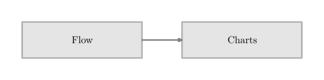
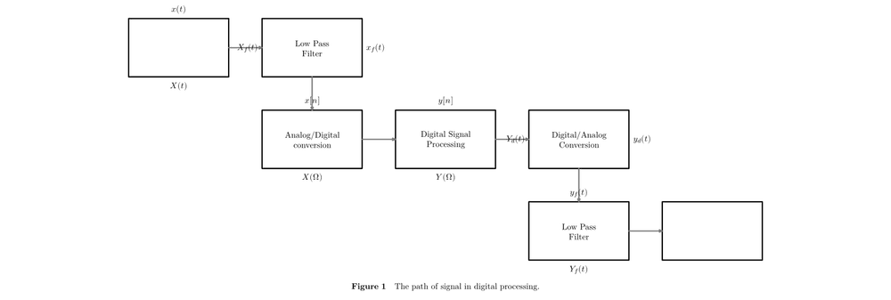
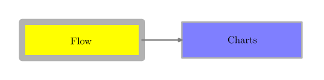

Context provides a charts module to create flow charts. The details are in the Charts uncovered manual by Pragma.
For example
-
\usemodule[chart] \setupFLOWcharts[height=3\lineheight] \startFLOWchart[example] \startFLOWcell \name {flow} \location {1,1} \text {Flow} \connection [rl] {chart} \stopFLOWcell \startFLOWcell \name {chart} \location{2,1} \text {Charts} \stopFLOWcell \stopFLOWchart \FLOWchart[example]
- 
The more sophisticated example:
-
\usemodule[chart] \setuppapersize[A2] \setupFLOWcharts [nx=5, ny=3, dx=2\bodyfontsize, dy=2\bodyfontsize, maxwidth=\textwidth ] \setupFLOWshapes [framecolor=black, background=color, backgroundcolor=white, ] \startFLOWchart[DSP] \startFLOWcell \name{input} \location{1,1} \shape{44} \connection[rl] {lowpass1} \comment[t]{$x(t)$} \comment[b]{$X(t)$} \stopFLOWcell \startFLOWcell \name {lowpass1} \location {2,1} \text {Low Pass\crlf Filter} \connection[bt] {adconv} \comment[r]{$x_f(t)$} \comment[l]{$X_f(t)$} \stopFLOWcell \startFLOWcell \name{adconv} \location{2,2} \text{Analog/Digital\crlf conversion} \connection[rl]{dsp} \comment[t]{$x[n]$} \comment[b]{$X(\Omega)$} \stopFLOWcell \startFLOWcell \name{dsp} \location{3,2} \text{Digital Signal\crlf Processing} \connection[rl]{daconv} \comment[t]{$y[n]$} \comment[b]{$Y(\Omega)$} \stopFLOWcell \startFLOWcell \name{daconv} \location{4,2} \text{Digital/Analog\crlf Conversion} \connection[bt]{lowpass2} \comment[r]{$y_d(t)$} \comment[l]{$Y_d(t)$} \stopFLOWcell \startFLOWcell \name {lowpass2} \location {4,3} \text {Low Pass\crlf Filter} \connection[rl]{output} \comment[t]{$y_f(t)$} \comment[b]{$Y_f(t)$} \stopFLOWcell \startFLOWcell \name {output} \location {5,3} \shape{44} \stopFLOWcell \stopFLOWchart \placefigure[here][fig:chart]{The path of signal in digital processing.} { \FLOWchart[DSP] }
- 
Contents
Changing the appearance of cells (background color, rule thickness)
It is possible to have each cell with its own color and its own rule thickness. For example
-
\usemodule[chart] \setupFLOWcharts[height=3\lineheight] \startFLOWchart[example-Cell] \startFLOWcell[background=color,backgroundcolor=yellow,rulethickness=5pt] \name {flow} \location {1,1} \text {Flow} \connection [rl] {chart} \stopFLOWcell \startFLOWcell[background=color,backgroundcolor=lightblue] \name {chart} \location{2,1} \text {Charts} \stopFLOWcell \stopFLOWchart \FLOWchart[example-Cell]
- 
As a matter of fact, there is no need for "background=color" because each cell already has a background color by default.
Syntax for \connection
\connection [<from><to>] {<FLOWcell>}
<from> and <to> are the points from which point to which point the connection should be drawn. The following graphic depicts the names of the points.
-t t +t
----------------
+l | | +r
| |
l | | r
| |
-l | | -r
| |
----------------
-b b +b
Example
The following code draws a line from the left top point of the current cell to the right bottom point of cell foobar.
\connection [-t+b] {foobar}
The code for connections in the pdf manual, e.g.
\connection[nb,pt]{episode_02_title}
No longer works
Aligning text within the cell
To align left or right, use
\text[l]{left} \text[r]{right}
Forcing a paragraph break with \par in a cell does not work...
\text[l]{firstline \par secondline}
Whereas using \\ does work, so:
\text[l]{firstline \\ secondline}
Further hints
- Charts uncovered manual
- There was a Flowchart creater to create flowchart code using javascript, but it disappeared.
- The nodes module covers even more applications of charts.